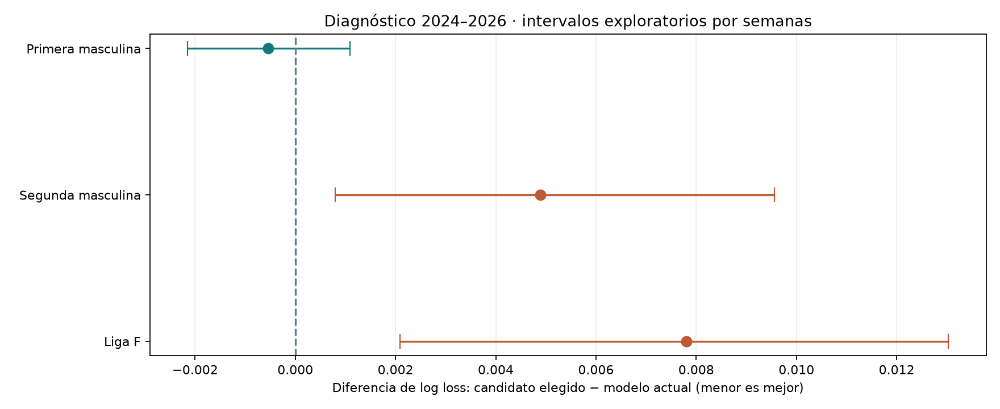

19 de octubre de 2026 · investigación en Primera, Segunda y Liga F.
Resultado: conservar el modelo actual como referencia. La mejora elegida para Primera es pequeña y su intervalo incluye cero. Los candidatos elegidos para Segunda y Liga F empeoran en el periodo posterior. Estos periodos históricos ya se habían inspeccionado; no son confirmación prospectiva.
Los goles se ajustan cada semana con resultados anteriores al corte. La calibración inicial usa 2022–2023; la selección usa 2023–2024. Después se reajusta la calibración con 2022–2024 y se diagnostica en los mismos partidos de 2024–2026. La evaluación final contiene 1716 ajustes de goles convergidos y 39 candidatos por competición.
| Competición | Partidos | LL actual | Candidato elegido | LL candidato | Δ LL | Intervalo exploratorio 95 % |
|---|---|---|---|---|---|---|
| Primera masculina | 760 | 0.972316 | Binomial negativa + marcadores bajos (25%) · Temperatura | 0.971772 | -0.000544 | [-0.002146, 0.001096] |
| Segunda masculina | 924 | 1.044906 | Binomial negativa (100%) · Contextual | 1.049801 | 0.004895 | [0.000801, 0.009565] |
| Liga F | 480 | 0.886576 | Poisson de control (100%) · Identidad | 0.894380 | 0.007804 | [0.002087, 0.013031] |

Los intervalos remuestrean semanas y no corrigen la búsqueda entre candidatos ni toda la dependencia entre temporadas y equipos. El candidato elegido se conserva aunque después empeore.
Estos modos se aplican a la referencia anterior a su calibración final original. En Liga F, identidad elimina esa calibración original; el valor del modelo actual aparece en la tabla principal. Las mejoras de esta sección son diagnósticas y no eligen una variante con información posterior.
| Competición | Calibración | LL diagnóstico | Δ frente al modelo actual |
|---|---|---|---|
| Primera masculina | Identidad | 0.972316 | 0.000000 |
| Primera masculina | Temperatura | 0.972201 | -0.000116 |
| Primera masculina | Contextual | 0.970939 | -0.001378 |
| Segunda masculina | Identidad | 1.044906 | 0.000000 |
| Segunda masculina | Temperatura | 1.044907 | 0.000002 |
| Segunda masculina | Contextual | 1.047438 | 0.002532 |
| Liga F | Identidad | 0.886212 | -0.000363 |
| Liga F | Temperatura | 0.886576 | 0.000000 |
| Liga F | Contextual | 0.885010 | -0.001566 |
En estos modelos, k grande aproxima el límite Poisson. El ajuste llega con frecuencia al límite superior k=1000; los datos y priors de esta prueba apoyan poca sobredispersión adicional. Esto no descarta otras formas de dependencia, variación temporal o errores en las medias.
| Competición | Familia | k mediano | k mínimo | k máximo |
|---|---|---|---|---|
| Primera masculina | Binomial negativa | 1000.00 | 1000.00 | 1000.00 |
| Primera masculina | Ritmo compartido | 1000.00 | 98.69 | 1000.00 |
| Primera masculina | Binomial negativa + marcadores bajos | 1000.00 | 1000.00 | 1000.00 |
| Segunda masculina | Binomial negativa | 1000.00 | 1000.00 | 1000.00 |
| Segunda masculina | Ritmo compartido | 1000.00 | 85.32 | 1000.00 |
| Segunda masculina | Binomial negativa + marcadores bajos | 1000.00 | 1000.00 | 1000.00 |
| Liga F | Binomial negativa | 1000.00 | 24.12 | 1000.00 |
| Liga F | Ritmo compartido | 1000.00 | 39.17 | 1000.00 |
| Liga F | Binomial negativa + marcadores bajos | 1000.00 | 24.12 | 1000.00 |
| Variante | LL selección 2023–24 | LL diagnóstico 2024–26 | Δ frente al actual | Brier diagnóstico |
|---|---|---|---|---|
| Binomial negativa + marcadores bajos (25%) · Temperatura | 0.960658 | 0.971772 | -0.000544 | 0.575793 |
| Ritmo compartido (25%) · Temperatura | 0.960682 | 0.971763 | -0.000553 | 0.575789 |
| Poisson de control (25%) · Temperatura | 0.960701 | 0.971764 | -0.000552 | 0.575790 |
| Binomial negativa (25%) · Temperatura | 0.960711 | 0.971767 | -0.000549 | 0.575792 |
| Referencia previa a calibración · Identidad | 0.960750 | 0.972316 | 0.000000 | 0.576058 |
| Referencia previa a calibración · Temperatura | 0.960893 | 0.972201 | -0.000116 | 0.575975 |
| Binomial negativa + marcadores bajos (50%) · Temperatura | 0.961123 | 0.971862 | -0.000455 | 0.575947 |
| Binomial negativa + marcadores bajos (25%) · Identidad | 0.961135 | 0.972380 | 0.000064 | 0.576183 |
| Ritmo compartido (25%) · Identidad | 0.961154 | 0.972368 | 0.000052 | 0.576177 |
| Poisson de control (25%) · Identidad | 0.961170 | 0.972367 | 0.000051 | 0.576176 |
| Ritmo compartido (50%) · Temperatura | 0.961175 | 0.971844 | -0.000472 | 0.575939 |
| Binomial negativa (25%) · Identidad | 0.961183 | 0.972373 | 0.000057 | 0.576180 |
| Poisson de control (50%) · Temperatura | 0.961213 | 0.971848 | -0.000468 | 0.575942 |
| Binomial negativa (50%) · Temperatura | 0.961234 | 0.971855 | -0.000461 | 0.575947 |
| Binomial negativa + marcadores bajos (50%) · Identidad | 0.962375 | 0.973207 | 0.000890 | 0.576802 |
| Ritmo compartido (50%) · Identidad | 0.962411 | 0.973180 | 0.000864 | 0.576788 |
| Poisson de control (50%) · Identidad | 0.962439 | 0.973177 | 0.000861 | 0.576786 |
| Binomial negativa (50%) · Identidad | 0.962468 | 0.973192 | 0.000875 | 0.576795 |
| Referencia previa a calibración · Contextual | 0.963185 | 0.970939 | -0.001378 | 0.575124 |
| Ritmo compartido (25%) · Contextual | 0.963387 | 0.970676 | -0.001641 | 0.575050 |
| Binomial negativa + marcadores bajos (25%) · Contextual | 0.963398 | 0.970694 | -0.001623 | 0.575063 |
| Poisson de control (25%) · Contextual | 0.963404 | 0.970674 | -0.001642 | 0.575049 |
| Binomial negativa (25%) · Contextual | 0.963414 | 0.970676 | -0.001640 | 0.575051 |
| Ritmo compartido (50%) · Contextual | 0.964330 | 0.970956 | -0.001360 | 0.575334 |
| Binomial negativa + marcadores bajos (50%) · Contextual | 0.964351 | 0.970995 | -0.001321 | 0.575360 |
| Poisson de control (50%) · Contextual | 0.964364 | 0.970954 | -0.001362 | 0.575333 |
| Binomial negativa (50%) · Contextual | 0.964386 | 0.970960 | -0.001356 | 0.575337 |
| Binomial negativa + marcadores bajos (100%) · Temperatura | 0.964640 | 0.974001 | 0.001685 | 0.577576 |
| Ritmo compartido (100%) · Temperatura | 0.964747 | 0.973969 | 0.001653 | 0.577563 |
| Poisson de control (100%) · Temperatura | 0.964821 | 0.973982 | 0.001666 | 0.577572 |
| Binomial negativa (100%) · Temperatura | 0.964866 | 0.974003 | 0.001686 | 0.577584 |
| Binomial negativa + marcadores bajos (100%) · Identidad | 0.967339 | 0.977006 | 0.004690 | 0.579523 |
| Ritmo compartido (100%) · Identidad | 0.967400 | 0.976945 | 0.004629 | 0.579487 |
| Poisson de control (100%) · Identidad | 0.967441 | 0.976935 | 0.004619 | 0.579480 |
| Binomial negativa (100%) · Identidad | 0.967505 | 0.976975 | 0.004659 | 0.579505 |
| Ritmo compartido (100%) · Contextual | 0.968760 | 0.973560 | 0.001243 | 0.577293 |
| Binomial negativa + marcadores bajos (100%) · Contextual | 0.968794 | 0.973642 | 0.001326 | 0.577342 |
| Poisson de control (100%) · Contextual | 0.968823 | 0.973559 | 0.001243 | 0.577293 |
| Binomial negativa (100%) · Contextual | 0.968872 | 0.973577 | 0.001261 | 0.577305 |
| Variante | LL selección 2023–24 | LL diagnóstico 2024–26 | Δ frente al actual | Brier diagnóstico |
|---|---|---|---|---|
| Binomial negativa (100%) · Contextual | 1.050656 | 1.049801 | 0.004895 | 0.632098 |
| Ritmo compartido (100%) · Contextual | 1.050661 | 1.049837 | 0.004931 | 0.632112 |
| Poisson de control (100%) · Contextual | 1.050662 | 1.049801 | 0.004895 | 0.632097 |
| Binomial negativa + marcadores bajos (100%) · Contextual | 1.050853 | 1.049715 | 0.004809 | 0.632053 |
| Binomial negativa (50%) · Contextual | 1.051774 | 1.048349 | 0.003443 | 0.631034 |
| Poisson de control (50%) · Contextual | 1.051778 | 1.048350 | 0.003444 | 0.631034 |
| Ritmo compartido (50%) · Contextual | 1.051779 | 1.048367 | 0.003461 | 0.631041 |
| Binomial negativa + marcadores bajos (50%) · Contextual | 1.051908 | 1.048311 | 0.003405 | 0.631016 |
| Binomial negativa (25%) · Contextual | 1.052579 | 1.047830 | 0.002924 | 0.630638 |
| Poisson de control (25%) · Contextual | 1.052581 | 1.047830 | 0.002924 | 0.630638 |
| Ritmo compartido (25%) · Contextual | 1.052582 | 1.047839 | 0.002933 | 0.630642 |
| Binomial negativa + marcadores bajos (25%) · Contextual | 1.052655 | 1.047811 | 0.002905 | 0.630630 |
| Binomial negativa + marcadores bajos (50%) · Identidad | 1.053398 | 1.045752 | 0.000847 | 0.629388 |
| Ritmo compartido (50%) · Identidad | 1.053432 | 1.045731 | 0.000826 | 0.629365 |
| Poisson de control (50%) · Identidad | 1.053437 | 1.045719 | 0.000813 | 0.629360 |
| Binomial negativa (50%) · Identidad | 1.053438 | 1.045720 | 0.000814 | 0.629360 |
| Referencia previa a calibración · Contextual | 1.053539 | 1.047438 | 0.002532 | 0.630326 |
| Binomial negativa + marcadores bajos (100%) · Identidad | 1.053554 | 1.047333 | 0.002427 | 0.630486 |
| Ritmo compartido (25%) · Identidad | 1.053641 | 1.045221 | 0.000315 | 0.628997 |
| Binomial negativa + marcadores bajos (25%) · Identidad | 1.053642 | 1.045236 | 0.000330 | 0.629011 |
| Binomial negativa (25%) · Identidad | 1.053643 | 1.045214 | 0.000308 | 0.628994 |
| Poisson de control (25%) · Identidad | 1.053643 | 1.045214 | 0.000309 | 0.628994 |
| Ritmo compartido (100%) · Identidad | 1.053764 | 1.047327 | 0.002421 | 0.630459 |
| Poisson de control (100%) · Identidad | 1.053780 | 1.047305 | 0.002399 | 0.630449 |
| Binomial negativa (100%) · Identidad | 1.053785 | 1.047311 | 0.002405 | 0.630452 |
| Binomial negativa + marcadores bajos (100%) · Temperatura | 1.053791 | 1.047115 | 0.002209 | 0.630317 |
| Binomial negativa + marcadores bajos (50%) · Temperatura | 1.053793 | 1.045651 | 0.000745 | 0.629310 |
| Ritmo compartido (50%) · Temperatura | 1.053820 | 1.045640 | 0.000734 | 0.629294 |
| Binomial negativa (50%) · Temperatura | 1.053825 | 1.045629 | 0.000723 | 0.629290 |
| Poisson de control (50%) · Temperatura | 1.053825 | 1.045629 | 0.000723 | 0.629290 |
| Ritmo compartido (100%) · Temperatura | 1.054019 | 1.047144 | 0.002238 | 0.630315 |
| Poisson de control (100%) · Temperatura | 1.054036 | 1.047127 | 0.002221 | 0.630310 |
| Binomial negativa (100%) · Temperatura | 1.054040 | 1.047131 | 0.002225 | 0.630312 |
| Ritmo compartido (25%) · Temperatura | 1.054078 | 1.045184 | 0.000278 | 0.628966 |
| Binomial negativa (25%) · Temperatura | 1.054079 | 1.045177 | 0.000271 | 0.628964 |
| Poisson de control (25%) · Temperatura | 1.054080 | 1.045177 | 0.000271 | 0.628964 |
| Binomial negativa + marcadores bajos (25%) · Temperatura | 1.054087 | 1.045196 | 0.000290 | 0.628978 |
| Referencia previa a calibración · Identidad | 1.054108 | 1.044906 | 0.000000 | 0.628748 |
| Referencia previa a calibración · Temperatura | 1.054556 | 1.044907 | 0.000002 | 0.628750 |
| Variante | LL selección 2023–24 | LL diagnóstico 2024–26 | Δ frente al actual | Brier diagnóstico |
|---|---|---|---|---|
| Poisson de control (100%) · Identidad | 0.818513 | 0.894380 | 0.007804 | 0.528059 |
| Poisson de control (50%) · Temperatura | 0.818526 | 0.890431 | 0.003855 | 0.525025 |
| Ritmo compartido (50%) · Temperatura | 0.818533 | 0.890597 | 0.004021 | 0.525136 |
| Ritmo compartido (100%) · Identidad | 0.818534 | 0.894734 | 0.008158 | 0.528284 |
| Poisson de control (50%) · Identidad | 0.818536 | 0.889818 | 0.003242 | 0.524759 |
| Binomial negativa (50%) · Temperatura | 0.818537 | 0.890607 | 0.004031 | 0.525099 |
| Ritmo compartido (50%) · Identidad | 0.818547 | 0.889987 | 0.003411 | 0.524870 |
| Binomial negativa (100%) · Identidad | 0.818548 | 0.894785 | 0.008209 | 0.528235 |
| Binomial negativa (50%) · Identidad | 0.818555 | 0.890025 | 0.003449 | 0.524847 |
| Binomial negativa + marcadores bajos (50%) · Temperatura | 0.818621 | 0.890587 | 0.004011 | 0.525085 |
| Binomial negativa + marcadores bajos (50%) · Identidad | 0.818637 | 0.890012 | 0.003436 | 0.524838 |
| Poisson de control (25%) · Temperatura | 0.818652 | 0.888393 | 0.001817 | 0.523500 |
| Ritmo compartido (25%) · Temperatura | 0.818656 | 0.888474 | 0.001898 | 0.523555 |
| Binomial negativa (25%) · Temperatura | 0.818658 | 0.888480 | 0.001904 | 0.523536 |
| Poisson de control (100%) · Temperatura | 0.818670 | 0.895138 | 0.008562 | 0.528436 |
| Poisson de control (50%) · Contextual | 0.818684 | 0.888946 | 0.002370 | 0.524284 |
| Ritmo compartido (100%) · Temperatura | 0.818685 | 0.895491 | 0.008915 | 0.528662 |
| Binomial negativa (100%) · Temperatura | 0.818692 | 0.895501 | 0.008925 | 0.528594 |
| Ritmo compartido (50%) · Contextual | 0.818692 | 0.889119 | 0.002543 | 0.524399 |
| Binomial negativa (50%) · Contextual | 0.818698 | 0.889137 | 0.002562 | 0.524364 |
| Binomial negativa + marcadores bajos (25%) · Temperatura | 0.818701 | 0.888473 | 0.001897 | 0.523531 |
| Binomial negativa + marcadores bajos (100%) · Identidad | 0.818709 | 0.894737 | 0.008161 | 0.528203 |
| Poisson de control (25%) · Identidad | 0.818716 | 0.887899 | 0.001323 | 0.523321 |
| Ritmo compartido (25%) · Identidad | 0.818721 | 0.887981 | 0.001405 | 0.523376 |
| Binomial negativa (25%) · Identidad | 0.818726 | 0.888003 | 0.001427 | 0.523365 |
| Binomial negativa + marcadores bajos (25%) · Identidad | 0.818767 | 0.888000 | 0.001424 | 0.523362 |
| Binomial negativa + marcadores bajos (50%) · Contextual | 0.818779 | 0.889120 | 0.002544 | 0.524353 |
| Poisson de control (25%) · Contextual | 0.818804 | 0.886864 | 0.000288 | 0.522746 |
| Ritmo compartido (25%) · Contextual | 0.818808 | 0.886948 | 0.000372 | 0.522803 |
| Binomial negativa (25%) · Contextual | 0.818811 | 0.886959 | 0.000383 | 0.522785 |
| Poisson de control (100%) · Contextual | 0.818822 | 0.893776 | 0.007200 | 0.527746 |
| Ritmo compartido (100%) · Contextual | 0.818839 | 0.894140 | 0.007564 | 0.527978 |
| Binomial negativa (100%) · Contextual | 0.818849 | 0.894165 | 0.007589 | 0.527916 |
| Binomial negativa + marcadores bajos (25%) · Contextual | 0.818852 | 0.886953 | 0.000377 | 0.522782 |
| Binomial negativa + marcadores bajos (100%) · Temperatura | 0.818856 | 0.895436 | 0.008860 | 0.528551 |
| Referencia previa a calibración · Temperatura | 0.818912 | 0.886576 | 0.000000 | 0.522108 |
| Referencia previa a calibración · Identidad | 0.819007 | 0.886212 | -0.000363 | 0.522024 |
| Binomial negativa + marcadores bajos (100%) · Contextual | 0.819007 | 0.894103 | 0.007527 | 0.527877 |
| Referencia previa a calibración · Contextual | 0.819051 | 0.885010 | -0.001566 | 0.521346 |
El Pleno se evalúa como categoría de goles en todos los partidos históricos. Estas métricas pertenecen a cada modelo de goles por separado. Las mezclas y calibraciones 1X2 no heredan una distribución conjunta de marcadores. Las colas de tres o más goles se conservan.
| Competición | Modelo de goles | LL 1X2 | LL categorías Pleno | Brier categorías Pleno |
|---|---|---|---|---|
| Primera masculina | Binomial negativa | 0.976975 | 2.533000 | 0.905348 |
| Primera masculina | Binomial negativa + marcadores bajos | 0.977006 | 2.533111 | 0.905366 |
| Primera masculina | Poisson de control | 0.976935 | 2.532830 | 0.905317 |
| Primera masculina | Ritmo compartido | 0.976945 | 2.532927 | 0.905345 |
| Segunda masculina | Binomial negativa | 1.047311 | 2.626245 | 0.919723 |
| Segunda masculina | Binomial negativa + marcadores bajos | 1.047333 | 2.626455 | 0.919788 |
| Segunda masculina | Poisson de control | 1.047305 | 2.626201 | 0.919718 |
| Segunda masculina | Ritmo compartido | 1.047327 | 2.626179 | 0.919708 |
| Liga F | Binomial negativa | 0.894785 | 2.438353 | 0.891930 |
| Liga F | Binomial negativa + marcadores bajos | 0.894737 | 2.438469 | 0.891939 |
| Liga F | Poisson de control | 0.894380 | 2.438398 | 0.891992 |
| Liga F | Ritmo compartido | 0.894734 | 2.438720 | 0.892019 |
La primera ronda comparó Poisson, binomial negativa y ritmo compartido. Tras revisar sus resultados se planteó la corrección de marcadores bajos. El seguimiento se identifica expresamente como adaptativo y exploratorio; las dos rondas y sus protocolos se conservan.
| Competición | Elegido en la primera ronda | LL actual | LL diagnóstico del elegido |
|---|---|---|---|
| Primera masculina | Ritmo compartido (25%) · Temperatura | 0.972316 | 0.971763 |
| Segunda masculina | Binomial negativa (100%) · Contextual | 1.044906 | 1.049801 |
| Liga F | Poisson de control (100%) · Identidad | 0.886576 | 0.894380 |
La investigación de distribuciones y dependencia de goles tiene antecedentes en Michels, Ötting y Karlis (2023) y Karlis y Ntzoufras (2003). Nuestras formulaciones y priors se documentan en el código; no se presenta una réplica de esos estudios.
Se verifican gradientes frente a diferencias numéricas, el modelo de ritmo contra integración Gamma–Poisson, conservación de masa y marginales, colas del Pleno, predicciones sin etiquetas y exclusión de resultados futuros.
Resultados completos · Protocolo final · Comprobaciones de ejecución · Primera ronda conservada